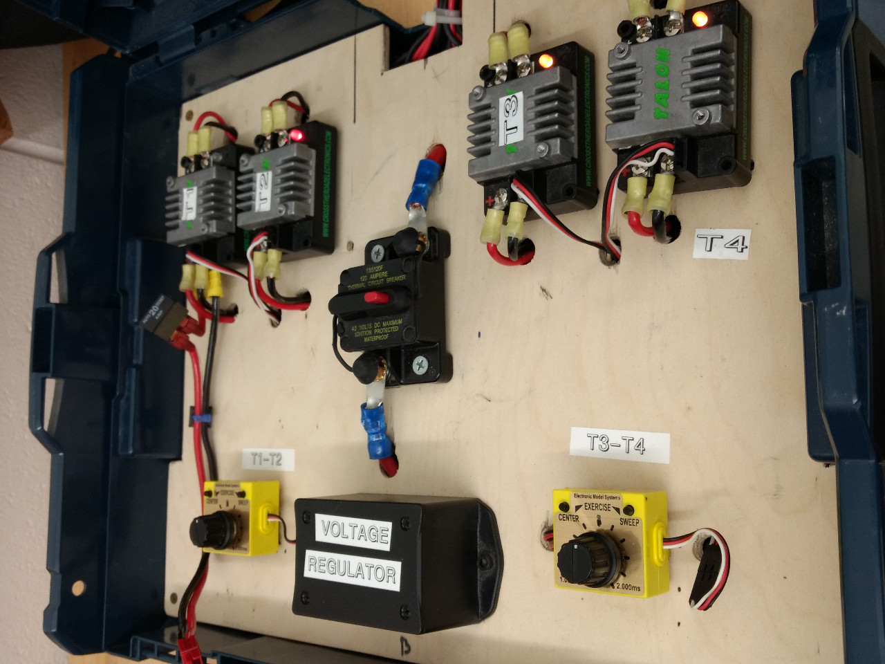

Projects
Here are some of my past projects. Some are personal projects and some are things I worked on for FRC Team #862.
Motor Test BenchThe motor test bench was the first almost-solo project I worked on for FRC Team #862. It was designed to take the place of a robot control system during prototyping, in situations where we wanted to be able to test or demonstrate the function of some motorized assembly but did not have access to a fully built-and-programmed control system to run it with. The motor test bench mainly constisted of robot components: four left-over, obsolete Talon ESCs, two generic PWM controllers (meant for testing servo motors), a couple of 7805-based votage regulator boards, fuses (hidden under the board), and a 120A breaker. All of this was housed in a modified Bosch toolbox. A few years after its original conception, myself and a few other team members upgraded the components to include a proper fuse panel and brand new, more powerful ESCs. Unfortunately, I don't have any pictures of the new version. |
 | ||||
Sensor Test BenchThis is another solo project I worked on for the robotics team. Like the motor test bench, this device is also designed for prototyping. However, rather than control motors, this test bench reads the values from multiple analog and digital sensors and displays them on a screen. The sensor test bench is based on an Arduino Mega. The Arduino reads the data from the sensors and displays it in a readable format on a large monochrome LCD display. The Arduino and display are both powered by a 12V rechargable Li-ion battery pack connected to a dual 5V and 3.3V regulator module. The sensors connect to a flush-mounted set of pin headers, which include a set of pull-up/pull-down resistors (this can be set by flipping a switch also mounted on the panel). Everything is mounted to the inside of a blow-molded plastic case. The sensor test bench is programmed in Arduino-C. However, it was written using PlatformIO and therefore must also be compiled with it. The code for this project is available on both Github and GitLab. |
|
||||


More projects will be added soon as I collect more photos. Stay tuned!